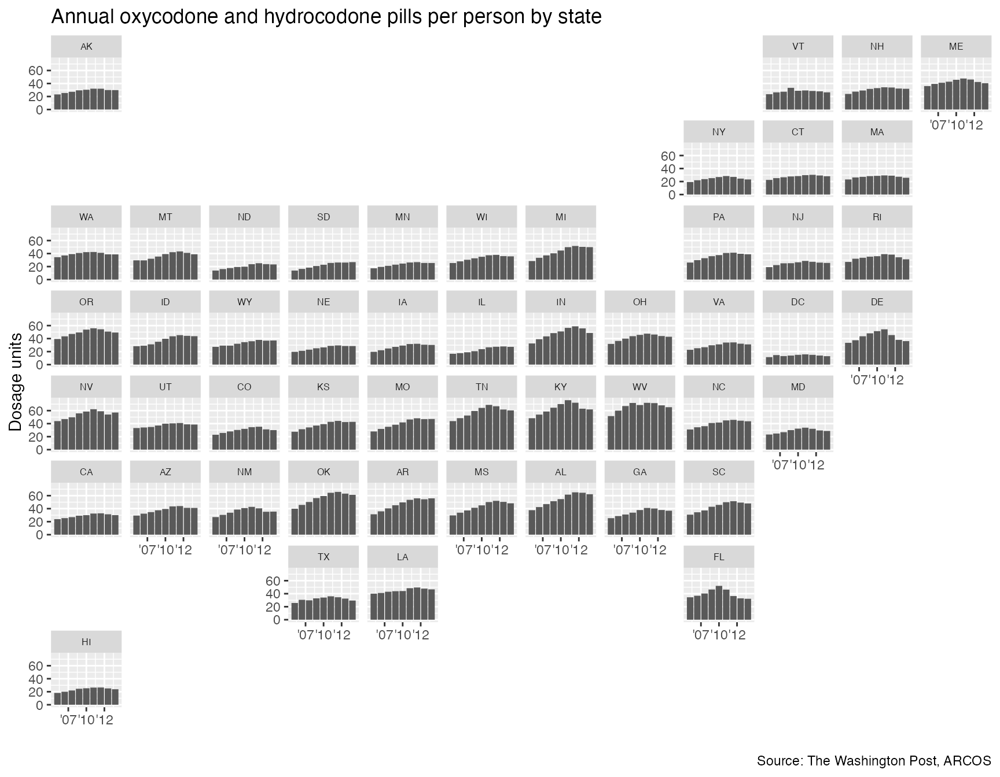

How to make some quick maps with the ARCOS api.
First, let’s load some packages.
packages <- c("tidyverse", "jsonlite", "knitr", "geofacet", "scales")
if (length(setdiff(packages, rownames(installed.packages()))) > 0) {
install.packages(setdiff(packages, rownames(installed.packages())), repos = "http://cran.us.r-project.org")
}
# These are all the packages you'll need to run everything below
library(tidyverse)
library(arcos)
library(jsonlite)
library(knitr)
library(geofacet)
library(scales)states <- combined_buyer_annual(key="WaPo")
kable(head(states))| BUYER_DEA_NO | BUYER_BUS_ACT | BUYER_COUNTY | BUYER_STATE | year | DOSAGE_UNIT |
|---|---|---|---|---|---|
| A90777889 | RETAIL PHARMACY | KINGS | NY | 2006 | 110700 |
| A90777889 | RETAIL PHARMACY | KINGS | NY | 2007 | 119100 |
| A90777889 | RETAIL PHARMACY | KINGS | NY | 2008 | 100300 |
| A90777889 | RETAIL PHARMACY | KINGS | NY | 2009 | 92630 |
| A90777889 | RETAIL PHARMACY | KINGS | NY | 2010 | 65860 |
| A90777889 | RETAIL PHARMACY | KINGS | NY | 2011 | 72030 |
We’ve pulled every pharmacy across the country and how many pills they sold per year.
Let’s aggregate and combine by states and year.
annual_states <- states %>%
group_by(BUYER_STATE, year) %>%
summarize(pills=sum(DOSAGE_UNIT)) %>%
filter(!is.na(BUYER_STATE))
kable(head(annual_states))| BUYER_STATE | year | pills |
|---|---|---|
| AE | 2006 | 330 |
| AK | 2006 | 15720610 |
| AK | 2007 | 17350433 |
| AK | 2008 | 18820491 |
| AK | 2009 | 20266809 |
| AK | 2010 | 21097203 |
Looks good. Let’s use the geofacet package to map out the annual pill trends.
ggplot(annual_states, aes(year, pills)) +
geom_col() +
facet_geo(~ BUYER_STATE, grid = "us_state_grid2") +
scale_x_continuous(labels = function(x) paste0("'", substr(x, 3, 4))) +
scale_y_continuous(label=comma) +
labs(title = "Annual oxycodone and hydrocodone pills by state",
caption = "Source: The Washington Post, ARCOS",
x = "",
y = "Dosage units") +
theme(strip.text.x = element_text(size = 6))This is nice but Florida, California, and Texas stand out because of their higher population.
We should normalize this with population.
Get the annual state population with state_population().
population <- state_population(key="WaPo")
kable(head(population))| BUYER_STATE | year | population |
|---|---|---|
| AL | 2009 | 4633360 |
| AK | 2009 | 683142 |
| AZ | 2009 | 6324865 |
| AR | 2009 | 2838143 |
| CA | 2009 | 36308527 |
| CO | 2009 | 4843211 |
Now, we join the two data sets.
Adjust for population.
annual_states_joined <- left_join(annual_states, population) %>%
filter(!is.na(population))
#> Joining, by = c("BUYER_STATE", "year")
kable(head(annual_states_joined))| BUYER_STATE | year | pills | population |
|---|---|---|---|
| AK | 2006 | 15720610 | 675302 |
| AK | 2007 | 17350433 | 680300 |
| AK | 2008 | 18820491 | 687455 |
| AK | 2009 | 20266809 | 683142 |
| AK | 2010 | 21097203 | 691189 |
| AK | 2011 | 22551775 | 700703 |
Do some math…
annual_states_joined <- annual_states_joined %>%
mutate(pills_per=pills/population)
kable(head(annual_states_joined))| BUYER_STATE | year | pills | population | pills_per |
|---|---|---|---|---|
| AK | 2006 | 15720610 | 675302 | 23.27938 |
| AK | 2007 | 17350433 | 680300 | 25.50409 |
| AK | 2008 | 18820491 | 687455 | 27.37705 |
| AK | 2009 | 20266809 | 683142 | 29.66705 |
| AK | 2010 | 21097203 | 691189 | 30.52306 |
| AK | 2011 | 22551775 | 700703 | 32.18450 |
Map it out again this time per capita.
ggplot(annual_states_joined, aes(year, pills_per)) +
geom_col() +
facet_geo(~ BUYER_STATE, grid = "us_state_grid2") +
scale_x_continuous(labels = function(x) paste0("'", substr(x, 3, 4))) +
scale_y_continuous(label=comma) +
labs(title = "Annual oxycodone and hydrocodone pills per person by state",
caption = "Source: The Washington Post, ARCOS",
x = "",
y = "Dosage units") +
theme(strip.text.x = element_text(size = 6))
West Virginia was known but South Carolina stands out.
That’s because a mail order pharmarcy is listed there.
Fortunately, there’s a way to filter out those pharmacies because the Post compiled a list of pharmacies that were misidentified.
Keep that in mind when doing these.